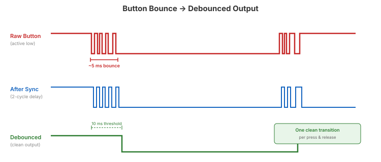

Video 4 of 4 · ~11 minutes
Dr. Mike Borowczak · Electrical & Computer Engineering · CECS · UCF
Mechanical switches don’t make clean transitions — they bounce for 1–20 ms.

module debounce #(
parameter CLKS_TO_STABLE = 250_000 // 10ms at 25MHz
)(
input wire i_clk, i_bouncy,
output reg o_clean
);
reg [$clog2(CLKS_TO_STABLE)-1:0] r_count;
reg r_sync_0, r_sync_1; // 2-FF synchronizer
always @(posedge i_clk) begin
r_sync_0 <= i_bouncy;
r_sync_1 <= r_sync_0; // synchronized input
end
always @(posedge i_clk) begin
if (r_sync_1 != o_clean) begin
r_count <= r_count + 1;
if (r_count == CLKS_TO_STABLE - 1)
o_clean <= r_sync_1;
end else
r_count <= 0;
end
endmodule
Button (async) → [2-FF Sync] → [Debounce Counter] → [Edge Detect] → Clean pulse
↑ solves ↑ solves ↑ creates
metastability bounce noise one-cycle pulse
// Edge detector: one-clock-cycle pulse on rising edge
reg r_clean_prev;
always @(posedge i_clk) r_clean_prev <= o_clean;
wire w_press_edge = o_clean & ~r_clean_prev;From empty file → debounced button on Go Board
day05_ex04_debounce.v — test with noisy simulation input
Q1: What does $clog2(N) return and why is it useful?
Q2: What type of shift register is the core of a UART TX? RX?
Q3: What causes metastability and what’s the standard fix?
Q4: Why synchronize before debouncing?
Pre-Class Videos Complete
Day 5 · Hands-On Lab
Make sure your toolchain is working and your Go Board is connected.